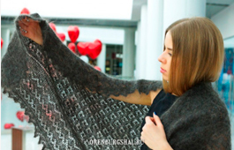
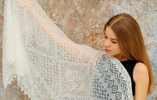

Стирка и сушка изделий
«Как сделать, чтобы пуховый платок всегда был как с иголок?
Пуховый платок изделие дорогое, красивое и требующее особенного ухода и заботы. Часто возникают ситуации, способные испортить любимую вещь. Случайное пятно или зацеп приведший к дырочке на платке, могут сильно огорчить его обладательницу. Если такая неприятность случилась у вас, не стоит отчаиваться.Наша компания не оставит вас один на один с бедой. Вы всегда можете обратиться к нам за квалифицированной помощью.
ремонт платка
качественно
ремонт платка
Стоимость: 500-1000 руб. в зависимости от сложности
Сроки: 2-3 дня
Наши мастерицы смогут качественно и профессионально произвести ремонт, стирку и перетяжку любого пухового изделия. В вашем распоряжении лучшие руки вязальщиц, для которых работа с платками - это родная и любимая стихия. Ремонт производится при помощи специальных вязальных приспособлений.
- 
стирка и сушка
профессионально
стирка и сушка
Стоимость: 500-1000 руб. в зависимости от сложности
Сроки: 2-3 дня
Стирка процесс не менее ответственный. Необходимо соблюсти технологию, чтобы изделие не село и не потеряло товарного вида. После стирки, наши мастерицы сушат платки на пяльцах. Пяльца это оптимальное приспособление для сушки.
Конечно можно использовать и подручные средства, но если вы трепетно относитесь к своему платку, то лучше доверить это дело профессионалам. Это особенно актуально, если речь идет о пуховых изделиях большого размера.
- 